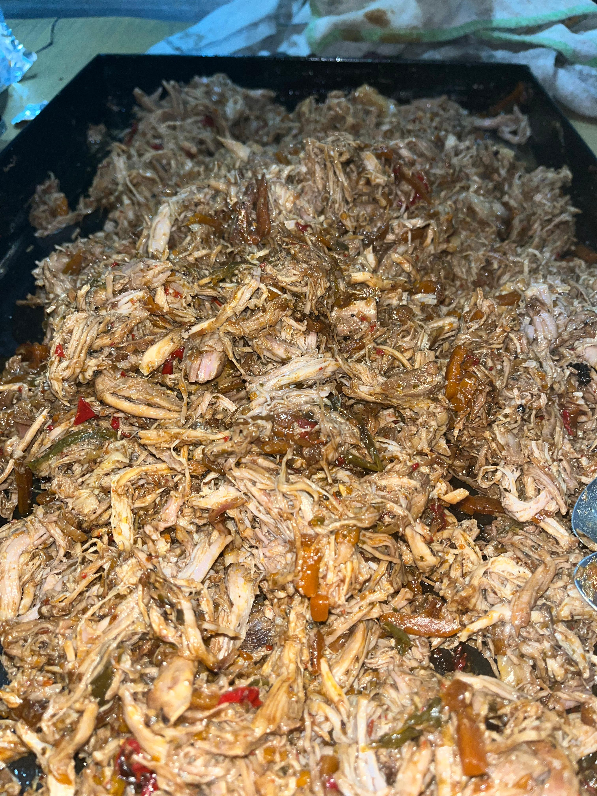
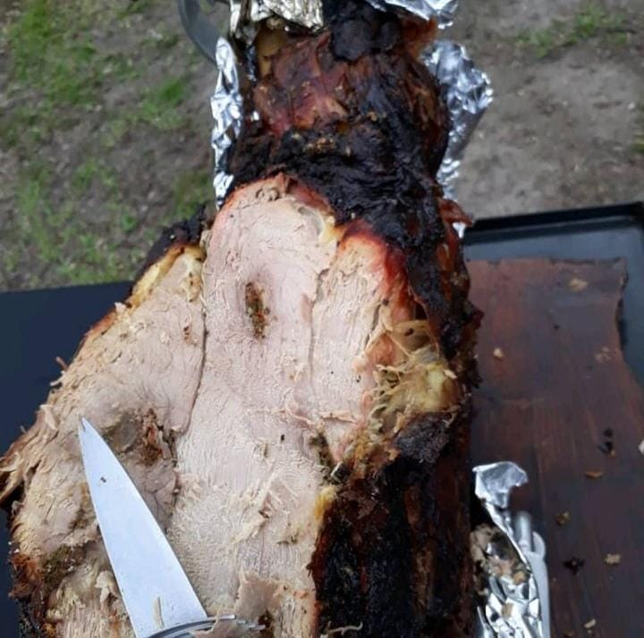
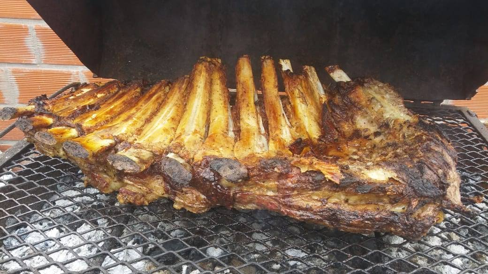

Bienvenidos a La Gran Pata Gaucha
Sabores únicos para compartir en tus mejores momentos.
Sobre nosotros
Nos especializamos en catering para eventos, con productos elaborados artesanalmente.
Nuestros productos

Bondiolas desmenuzadas
Bondiola desmenuzada cocinada a fuego lento en sus propios jugos,con un toque de cerveza y salsa barbacoa.
Consultar
Cuarto trasero de ternera
Ternera al horno de leña, tierna y sabrosa, ideal para compartir en todo tipo de eventos.
Consultar
Costillar de ternera
Costillar de ternera al horno de leña, dorado y sabroso, ideal para compartir en eventos.
ConsultarContacto
Consultanos por tu próximo evento.